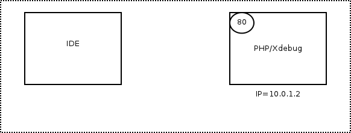

Step Debugging
Xdebug provides an interface for debugger clients that interact with running PHP scripts. This section explains how to set-up PHP and Xdebug to allow this, and introduces a few clients.
Introduction
Xdebug's (remote) debugger allows you to examine data structure, interactively walk through your and debug your code. The protocol that is being used is open, and is called DBGp. This protocol is implemented in Xdebug 2, and replaces an older GDB-like protocol that is no longer supported.
Clients
There are many client implementations (both free and commercial). There are all third party tools, so please refer to the original authors for support:
- Eclipse plugin (IDE).
- KDevelop (IDE: Linux (KDE); Open Source).
- ActiveState's Komodo (IDE: Windows, Linux, Mac; Commercial).
- NetBeans (IDE: Windows, Linux, Mac OS X and Solaris).
- Notepad++ plugin (Editor: Windows).
- Devsense's PHP Tools for Visual Studio (MS Visual Studio Plugin; Commercial).
- JetBrain's PhpStorm (IDE; Commercial).
- pugdebug (Standalone client for Linux, Windows and Mac OS X; Open Source).
- SublimeTextXdebug (Plugin for Sublime Text 2 and 3, Open Source).
- VIM plugin (Editor Plugin).
The simple command line client dbgpClient for debugging is
available on the download page.
Starting The Debugger
In order to enable Xdebug's debugger you need to make some configuration settings in php.ini. These settings are xdebug.remote_enable to enable the debugger, xdebug.remote_host and xdebug.remote_port to configure the IP address and port where the debugger should connect to. There is also a xdebug.remote_connect_back setting that can be used if your development server is shared with multiple developers.
If you want the debugger to initiate a session when an error situation occurs (PHP error or exception) then you also need to change the xdebug.remote_mode setting. Allowed values for this setting are "req" (the default) which makes the debugger initiate a session as soon as a script is started, or "jit" when a session should only be initiated on an error.
After made all those settings Xdebug will still not start a debugging session automatically when a script is run. You need to activate Xdebug's debugger and you can do that in three ways:
Using an environment variable
When running the script from the command line you need to set an environment variable, like:
export XDEBUG_CONFIG="idekey=session_name" php myscript.php
On Windows, setting an environment variable is done with set:
set XDEBUG_CONFIG="idekey=session_name"
You can also configure the xdebug.remote_host, xdebug.remote_port, xdebug.remote_mode and xdebug.remote_handler in this same environment variable as long as you separate the values by a space:
export XDEBUG_CONFIG="idekey=session_name remote_host=localhost profiler_enable=1"
All settings that you can set through the XDEBUG_CONFIG setting can also be set with normal php.ini settings.
Using a GET parameter
If you want to debug a script started through a web browser, simply add
XDEBUG_SESSION_START=session_name as parameter to the URL.
Instead of using a GET parameter, you can also set XDEBUG_SESSION_START as a
POST parameter, or through a cookie named XDEBUG_SESSION. Refer to the next section to read on how debug sessions work
from within a browser window.
Using a browser extension
An alternative way to activate the debugger while running PHP through a web server is by installing one of the following four browser extensions. Each of them allows you to simply enable the debugger by clicking on one button. When these extensions are active, they set the XDEBUG_SESSION cookie directly, instead of going through XDEBUG_SESSION_START as described in HTTP Debug Sessions further on.
The extensions are:
- Xdebug Helper for Firefox
- This extension for Firefox was built to make debugging with an IDE easier. You can find the extension at https://addons.mozilla.org/en-GB/firefox/addon/xdebug-helper-for-firefox/. The source code for this extension is on GitHub.
- Xdebug Helper for Chrome
- This extension for Chrome will help you to enable/disable debugging and profiling with a single click. You can find the extension at https://chrome.google.com/extensions/detail/eadndfjplgieldjbigjakmdgkmoaaaoc.
- XDebugToggle for Safari
- This extension for Safari allows you to auto start Xdebug debugging from within Safari. You can get it from Github at https://github.com/kampfq/SafariXDebugToggle.
- Xdebug launcher for Opera
- This extension for Opera allows you to start an Xdebug session from Opera.
Before you start your script you will need to tell your client that it can
receive debug connections, please refer to the documentation of the specific
client on how to do this. To use the bundled client simply start it after
downloading it. You can
start it by running dbgpClient on Linux,
dbgpClient-macos on MacOS, and dbgpClient.exe on
Windows.
When the debug client starts it will show version information and then waits until a connection is initiated by the debug server (Xdebug):
Xdebug Simple DBGp client (0.2) Copyright 2019-2020 by Derick Rethans In dumb client mode Waiting for debug server to connect on port 9000.
After a connection is made the output of the debug server is shown:
Connect from [::1]:53764 DBGp/1.0: Xdebug 3.0.0-dev — For PHP 7.4.3-dev Debugging file:///tmp/test-async.php (ID: 13699/derick) (cmd)
Now you can use the commands as explained on the DBGp documentation page. When the script ends the debug server disconnects from the client and the debug client resumes with waiting for a new connection. There is a more comprehensive documentation available for Command Line Debug Client as well.
Communication Set-up
With a static IP/single developer
With remote debugging, Xdebug embedded in PHP acts like the client, and the IDE as the server. The following animation shows how the communication channel is set-up:
- The IP of the server is 10.0.1.2 with HTTP on port 80
- The IDE is on IP 10.0.1.42, so xdebug.remote_host is set to 10.0.1.42
- The IDE listens on port 9000, so xdebug.remote_port is set to 9000
- The HTTP request is started on the machine running the IDE
- Xdebug connects to 10.0.1.42:9000
- Debugging runs, HTTP Response provided
With an unknown IP/multiple developers
If xdebug.remote_connect_back is used, the set-up is slightly different:

- The IP of the server is 10.0.1.2 with HTTP on port 80
- The IDE is on an unknown IP, so xdebug.remote_connect_back is set to 1
- The IDE listens on port 9000, so xdebug.remote_port is set to 9000
- The HTTP request is made, Xdebug detects the IP address from the HTTP headers
- Xdebug connects to the detected IP (10.0.1.42) on port 9000
- Debugging runs, HTTP Response provided
HTTP Debug Sessions
Xdebug contains functionality to keep track of a debug session when started through a browser: cookies. This works like this:
- When the URL variable
XDEBUG_SESSION_START=nameis appended to an URL—or through a POST variable with the same name—Xdebug emits a cookie with the name "XDEBUG_SESSION" and as value the value of the XDEBUG_SESSION_START URL parameter. The default expiry time of the cookie is one hour, but this can be configured through the xdebug.remote_cookie_expire_time setting. The DBGp protocol also passes this same value to theinitpacket when connecting to the debugging client in the "idekey" attribute. - When there is a GET (or POST) variable XDEBUG_SESSION_START or the XDEBUG_SESSION cookie is set, Xdebug will try to connect to a debugging client.
- To stop a debug session (and to destroy the cookie) simply add the URL
parameter
XDEBUG_SESSION_STOP. Xdebug will then no longer try to make a connection to the debugging client.
Multiple Users Debugging
Xdebug only allows you to specify one IP address to connect to with xdebug.remote_host) while doing remote debugging. It does not automatically connect back to the IP address of the machine the browser runs on, unless you use xdebug.remote_connect_back.
If all of your developers work on different projects on the same (development)
server, you can make the xdebug.remote_host setting for each directory
through Apache's .htaccess functionality by using php_value
xdebug.remote_host=10.0.0.5. However, for the case where multiple
developers work on the same code, the .htaccess trick does not work as the
directory in which the code lives is the same.
There are two solutions to this. First of all, you can use a DBGp proxy. For an overview on how to use this proxy, please refer to the article at Debugging with multiple users. You can download the proxy on ActiveState's web site as part of the python remote debugging package. There is some more documentation in the Komodo FAQ.
Secondly you can use the xdebug.remote_connect_back setting that was introduced in Xdebug 2.1.
Implementation Details
Xdebug's implementation of the
DBGp protocol's context_names
command does not depend on the stack level. The returned value is always the
same during each debugger session, and hence, can be safely cached.
Custom DBGp commands
The DBGp protocol allows for debugger engine specific commands, prefixed with
the xcmd_ prefix. Xdebug includes a few of these, and they're
documented here.
DBGp: xcmd_profiler_name_get
If Xdebug's profiler is currently active (See: Profiling), this command returns the name of the file that is being used to write the profiling information to.
DBGp: xcmd_get_executable_lines
This command returns which lines in an active stack frame can have a working
breakpoint. These are the lines which have an EXT_STMT
opcode on them. This commands accepts a -d option, which
indicates the stack depth, with 0 being the top leve stack frame.
The command returns the information in the following XML format:
<?xml version="1.0" encoding="iso-8859-1"?> <response xmlns="urn:debugger_protocol_v1" xmlns:xdebug="https://xdebug.org/dbgp/xdebug" command="xcmd_get_executable_lines" transaction_id="10"> <xdebug:lines> <xdebug:line lineno="2"></xdebug:line> <xdebug:line lineno="3"></xdebug:line> <xdebug:line lineno="4"></xdebug:line> <xdebug:line lineno="6"></xdebug:line> <xdebug:line lineno="8"></xdebug:line> </xdebug:lines> </response>
Related Settings and Functions
- integer xdebug.extended_info = 1
- string xdebug.idekey = *complex*
- string xdebug.remote_addr_header = ""
- boolean xdebug.remote_autostart = false
- boolean xdebug.remote_connect_back = false
- integer xdebug.remote_cookie_expire_time = 3600
- boolean xdebug.remote_enable = false
- string xdebug.remote_handler = dbgp
- string xdebug.remote_host = localhost
- string xdebug.remote_log =
- integer xdebug.remote_log_level = 7
- string xdebug.remote_mode = req
- integer xdebug.remote_port = 9000
- integer xdebug.remote_timeout = 200
- xdebug_break() : bool
- xdebug_is_debugger_active() : bool
Settings
integer xdebug.extended_info = 1 #
Available in Xdebug < 2.8
Controls whether Xdebug should enforce 'extended_info' mode for the PHP parser; this allows Xdebug to do file/line breakpoints with the remote debugger. When tracing or profiling scripts you generally want to turn off this option as PHP's generated oparrays will increase with about a third of the size slowing down your scripts. This setting can not be set in your scripts with ini_set(), but only in php.ini.
string xdebug.idekey = *complex* #
Controls which IDE Key Xdebug should pass on to the debugging client or proxy. The IDE Key is only important for use with the DBGp Proxy Tool, although some IDEs are incorrectly picky as to what its value is.
The default is based on the DBGP_IDEKEY environment setting. If
it is not present, the default falls back to an empty string.
If this setting is set to a non-empty string, it selects its value over
DBGP_IDEKEY environment variable as default value.
The internal IDE Key also gets updated through debugging session management and overrides the value of this setting as is explained in the documentation.
string xdebug.remote_addr_header = "" #
Introduced in Xdebug >= 2.4
If xdebug.remote_addr_header is configured to be a non-empty string, then the value is used as key in the $SERVER superglobal array to determine which header to use to find the IP address or hostname to use for 'connecting back to'. This setting is only used in combination with xdebug.remote_connect_back and is otherwise ignored.
boolean xdebug.remote_autostart = false #
Normally you need to use a specific HTTP GET/POST variable to start remote debugging (see Step Debugging). When this setting is set to 1, Xdebug will always attempt to start a remote debugging session and try to connect to a client, even if the GET/POST/COOKIE variable was not present.
boolean xdebug.remote_connect_back = false #
Introduced in Xdebug >= 2.1
If enabled, the xdebug.remote_host setting is ignored and Xdebug will try to connect to the client that made the HTTP request. It checks the $_SERVER['HTTP_X_FORWARDED_FOR'] and $_SERVER['REMOTE_ADDR'] variables to find out which IP address to use.
If xdebug.remote_addr_header is configured, then the $SERVER variable with the configured name will be checked before the $_SERVER['HTTP_X_FORWARDED_FOR'] and $_SERVER['REMOTE_ADDR'] variables.
This setting does not apply for debugging through the CLI, as the $SERVER header variables are not available there.
Please note that there is no filter available, and anybody who can connect to the webserver will then be able to start a debugging session, even if their address does not match xdebug.remote_host.
integer xdebug.remote_cookie_expire_time = 3600 #
Introduced in Xdebug >= 2.1
This setting can be used to increase (or decrease) the time that the remote debugging session stays alive via the session cookie.
boolean xdebug.remote_enable = false #
This switch controls whether Xdebug should try to contact a debug client which is listening on the host and port as set with the settings xdebug.remote_host and xdebug.remote_port. If a connection can not be established the script will just continue as if this setting was 0.
string xdebug.remote_handler = dbgp #
Available in Xdebug < 2.9
Can only be 'dbgp' to represent the debugger protocol. The DBGp protocol is the only supported protocol.
string xdebug.remote_host = localhost #
Selects the host where the debug client is running, you can either use a host name, IP address, or 'unix:///path/to/sock' for a Unix domain socket. This setting is ignored if xdebug.remote_connect_back is enabled.
Support for Unix domain sockets was introduced in Xdebug 2.6.
string xdebug.remote_log = #
Configures a file name to log all Step Debugging connection attempts, failures, and communication.
Enable this functionality by setting the value to a absolute path. Make sure
that the system user that PHP runs at (such as www-data if you are
running with Apache) can create and write to the file.
The file is opened in append-mode, and will therefore not be overwritten by default. There is no concurrency protection available.
When successfully enabled, the log file will include any attempt that Xdebug makes to connect to an IDE:
[1603325] Log opened at 2020-06-21 17:54:05 [1603325] I: Connecting to configured address/port: localhost:9000. [1603325] W: Creating socket for 'localhost:9000', poll success, but error: Operation now in progress (29). [1603325] I: Connected to client. :-)
It includes the opening time (2020-06-21 17:54:05), the
IP/Hostname and port Xdebug is trying to connect to
(localhost:9000), and whether it succeeded (Connected to
client :-)). The number in brackets ([1603325]) is the
Process ID.
It also logs the debugging communication itself, which starts with the <init XML element:
<init
xmlns="urn:debugger_protocol_v1" xmlns:xdebug="https://xdebug.org/dbgp/xdebug"
fileuri="file:///home/httpd/www.xdebug.org/html/router.php"
language="PHP" xdebug:language_version="7.4.2-dev"
protocol_version="1.0" appid="1603325" idekey="XDEBUG_ECLIPSE">
<engine version="2.9.6-dev"><![CDATA[Xdebug]]></engine>
<author><![CDATA[Derick Rethans]]></author>
<url><![CDATA[https://xdebug.org]]></url>
<copyright><![CDATA[Copyright (c) 2002-2020 by Derick Rethans]]></copyright>
</init>
The fileuri attribute lists the entry point of your
application, which can be useful to compare to breakpoint_set
commands to see if path mappings are set-up correctly.
Beyond the <init element, you will find the configuration of
features:
<- feature_set -i 4 -n extended_properties -v 1
-> <response
xmlns="urn:debugger_protocol_v1" xmlns:xdebug="https://xdebug.org/dbgp/xdebug"
command="feature_set" transaction_id="4" feature="extended_properties" success="1">
</response>
<- step_into -i 9
-> <response
xmlns="urn:debugger_protocol_v1" xmlns:xdebug="https://xdebug.org/dbgp/xdebug"
command="step_into" transaction_id="9"
status="break" reason="ok">
<xdebug:message filename="file:///home/httpd/www.xdebug.org/html/router.php" lineno="3">
</xdebug:message>
</response>
You can read about DBGP - A common debugger protocol specification at its dedicated documation page.
The xdebug.remote_log_level setting controls how much information is logged.
Note: Many Linux distributions now use systemd, which
implements private tmp directories. This means that when PHP
is run through a web server or as PHP-FPM, the /tmp directory is
prefixed with something akin to:
/tmp/systemd-private-ea3cfa882b4e478993e1994033fc5feb-apache.service-FfWZRg
integer xdebug.remote_log_level = 7 #
Introduced in Xdebug >= 2.8
Configures which logging messages should be emitted by the Step Debugging.
The following levels are supported:
| Level | Name | Example |
|---|---|---|
| 1 | Errors | Connection errors |
| 3 | Warnings | Connection warnings |
| 5 | Communication | Protocol messages |
| 7 | Information | Information while connecting |
| 10 | Debug | Breakpoint resolving information |
string xdebug.remote_mode = req #
Selects when a debug connection is initiated. This setting can have two different values:
- req
- Xdebug will try to connect to the debug client as soon as the script starts.
- jit
- Xdebug will only try to connect to the debug client as soon as an error condition occurs.
integer xdebug.remote_port = 9000 #
The port to which Xdebug tries to connect on the remote host. Port 9000 is the default for both Xdebug and the Command Line Debug Client. As many clients use this port number, it is best to leave this setting unchanged.
integer xdebug.remote_timeout = 200 #
Introduced in Xdebug >= 2.6
The amount of time in milliseconds that Xdebug will wait for on an IDE to acknowledge an incoming debugging connection. The default value of 200 ms should in most cases be enough. In case you often get dropped debugging requests, perhaps because you have a high latency network, or a development box far away from your IDE, or have a slow firewall, then you can should increase this value.
Please note that increasing this value might mean that your requests seem to 'hang' in case Xdebug tries to establish a connection, but your IDE is not listening.
Functions
xdebug_break() : bool #
Emits a breakpoint to the debug client
This function makes the debugger break on the line it is called from, as if a normal file/line breakpoint was set on this line through the debugger protocol.
The function returns true if a debugging session is (now) active,
and the breakpoint was succesfully set. It returns false if a
debugging session was not active and could not be activated.
xdebug_is_debugger_active() : bool #
Returns whether a debugging session is active
Returns true if a debugging session through DBGp is currently
active with a client attached; false, if not.